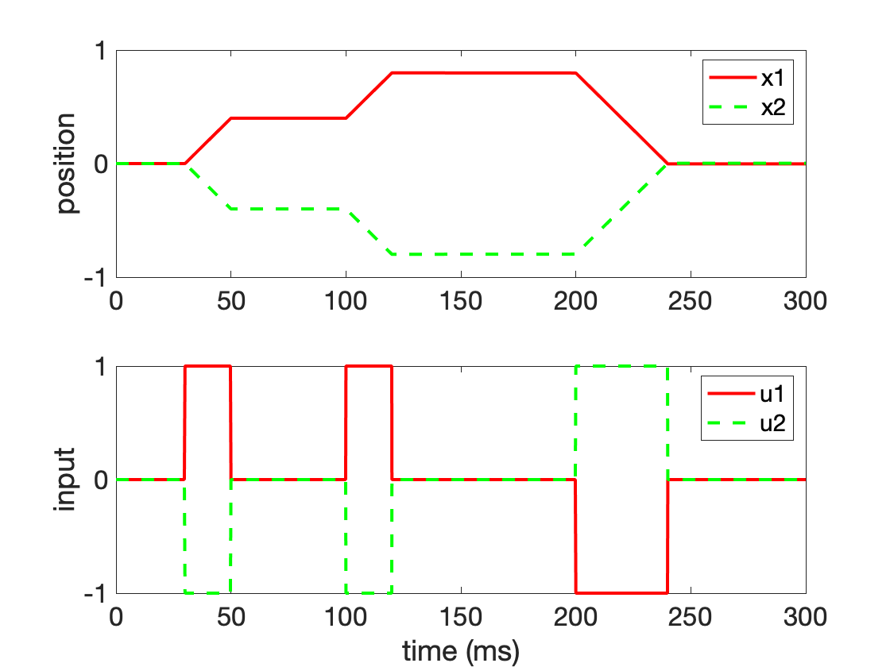

Neural integrators (e.g., the vestibulo-ocular reflex and head direction cells)
Preparation for class Thursday, February 13
- Read pp. 165-172 of Goldman, Compte, and Wang (2009). Neural Integrator Models. This reading discusses neural integrators more generally. Focus on understanding Figures 1-5.
Preparation for class Tuesday, February 18
- Read pp. 376-385 of Baer, Connors, and Paradiso (The Auditory and Vestibular Systems). [PDF]
- Read pp. 33-38, 42-44 of Robinson (1989). Integrating with neurons. Annu Rev Neurosci. 12:33-45. The page range indicates that you may skip the Models of Neural Integrators section, which we talked about already.
Overview
The introduction of Robinson 1989 discusses integration in control systems and the expectation (of bioengineers entering the field of neuroscience) that neural integrators and/or negative feedback would be found in the neural systems controlling eye position.
Robinson and others did indeed discover a neural integrator that whose performance is important for the proper function of the vestibulo-ocular reflex.

The same neural integrator is involved in saccadic eye movements. In both cases, neural activity that is proportional to "velocity" of the eye is converted into neural activity that is proportional to "position" of the eye.
Goldman, Compte, and Wang 2009 discuss neural integrators more generally, using the vestibulo-occular reflex as one example. Another example are head direction cells that integrate velocity signals emanating from the vestibular system. Goldman, Compte, and Wang 2009 use the VOR systems and head direction cells as examples of neural integrators exhibiting a "rate code" versus a "location code."
Think about: Which of these examples of neural "coding" (rate code versus location code) best illustrates the idea of neural representation?
Both of the required readings use differential equations to describe the activity of a population of neurons that exhibit recurrent excitatory connections. The equations written are examples of Wilson-Cowan population activity models, which describe
... the evolution of excitatory and inhibitory activity in a synaptically coupled neuronal network. As opposed to being a detailed biophysical model, [these equations are] a coarse-grained description of the overall activity of a large-scale neuronal network.... Key parameters in the model are the strength of connectivity between each subtype of population (excitatory and inhibitory) and the strength of input to each subpopulation. Varying these generates a diversity of dynamical behaviors that are representative of observed activity in the brain, like multistability, oscillations, traveling waves, and spatial patterns. (From Kilpatrick 2013. Wilson-Cowan model. Encyclopedia of Computational Neuroscience.)
Some mathematical explanation for the form of these equations is provided in these notes on Wilson-Cowan-type equations, The readings also discuss how the integration time constant for recurrent excitatory networks is longer than the time constant for the decay of neural activity in the absence of recurrent excitation. These notes show how postive feedback changes time constant of leaky integrator.
% Two-unit neural network for the integrator of the oculomotor system
%
% Greg Conradi Smith
%
% Written for APSC 450 Computational Neuroscience in Spring 2023
%
% Refernce: Cannon SC, Robinson DA, and Shamma S (1983). A proposed neural
% network for the integrator of the oculomotor system
%
% Background: Goldman, M. S., Compte, A., & Wang, X. J. (2009). Neural
% integrator models. Encyclopedia of neuroscience, 165-178.
clear; clc; close all
set(0, 'DefaultAxesFontSize', 18);
dt = 0.01;
total = 300;
tau = 5;
ws=1; wsmw=-0.9999; w=ws-wsmw;
vs=1; vsmv=0.1; v=vs-vsmv;
t = [0:dt:total];
[x1,x2, du] = deal(zeros(length(t),1));
du(find(t>30&t<50))=1;
du(find(t>100&t<120))=1;
du(find(t>200&t<240))=-1;
u1=du; u2=-du;
for i=2:length(t)
x1(i) = x1(i-1) + dt*( -(1+ws)*x1(i-1)-w*x2(i-1) + ...
vs*u1(i-1)+v*u2(i-1) )/tau;
x2(i) = x2(i-1) + dt*( -w*x1(i-1)-(1+ws)*x2(i-1) + ...
v*u1(i-1)+vs*u2(i-1) )/tau;
end
figure(1)
subplot(2,1,1)
plot(t,x1,'r',t,x2,'g--','LineWidth',2)
ylabel('position')
legend({'x1','x2'})
subplot(2,1,2)
plot(t,u1,'r',t,u2,'g--','LineWidth',2)
ylabel('input')
xlabel('time (ms)')
legend({'u1','u2'})

Further reading
- Arnold and Robinson (1992). A neural network model of the vestibulo-ocular reflex using a local synaptic learning rule. Philos Trans R Soc Lond B Biol Sci. 337(1281):327-30.
- Destexhe, A. and Sejnowski, T.J., 2009. The Wilson–Cowan model, 36 years later. Biological cybernetics, 101(1), pp.1-2.
- Cannon, Robinson and Shamma (1983). A proposed neural network for the integrator of the oculomotor system. Biol Cybern. 49(2):127-36.
- Branoner, F., Chagnaud, B. P., & Straka, H. (2016). Ontogenetic development of vestibulo-ocular reflexes in amphibians. Frontiers in neural circuits, 10, 91.
- Angelaki, D. E. (2004). Eyes on target: what neurons must do for the vestibuloocular reflex during linear motion. Journal of neurophysiology, 92(1), 20-35.